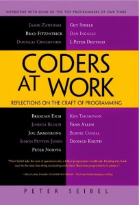

x
1. Coders at Work: Reflections on the Craft of Programming
If you’re curious about life as a programmer than Coders at Work is the book for you. It’s packed with interesting interviews from 15 accomplished programmers and computer scientists including Joshua Bloch, Peter Norvig, Donald Knuth, Ken Thomson, and Jamie Zawinski. The author, Peter Seibel (a programmer turned writer), got interviewees to open up about the famous projects that they worked on and the inspiring stories behind them.
Coders at Work gives a peek into what makes some of the greatest programmers tick and how they think. Definitely a must read!

2. 2666
Completed in 2003 shortly before his death, 2666 is not only Roberto Bolaño's masterpiece but also one of the finest and most important novels of the 21st century. It's an entire world unto itself, one — not unlike our own — filled with horror, neglect, depravity, brilliance, and beauty. Epic in scope and epitomizing the "total novel," 2666 fuses many different genres and styles to create a singular and unforgettable work of contemporary fiction. While Bolaño's swan song marked the pinnacle of a sadly truncated literary career, his immense talent, creativity, and vision endure.

3. Desert Solitaire
No author encapsulated and celebrated the American Southwest more engagingly than iconoclast and raconteur Edward Abbey. Desert Solitaire: A Season in the Wilderness — now nearly a half-century old — is a classic of environmental writing. In this autobiographical work, Abbey chronicles his time as a park ranger and reflects on landscape, culture, politics, tourism, environmental disregard, and degradation — doing so with a unique blend of ornery charm and breathtaking description. Though set in his beloved Southwest, Desert Solitaire beautifully and brashly captures the essence of the American outdoors, replete with disdain for those who'd seek to spoil its natural wonder.

4. Geek Love
This is the book I recommend more than any other — I can barely hold onto a copy of it because I am always giving it away to anyone who I think needs something that will blow the top of their skull off. On one level, it is the engaging, creepy, and extraordinary story of a family of purposely designed circus freaks, as told by the hunchback albino dwarf sister. On another level, it is a story about identity and belonging: How do you define yourself in terms of your family? Your culture? Your body? Your religion? How do you know what or who you really are?

x
Squaring The Circle
Squaring the circle is a problem proposed by ancient geometers. It is the challenge of constructing a square with the same area as a given circle by using only a finite number of steps with compass and straightedge. ... The expression "squaring the circle" is sometimes used as a metaphor for trying to do the impossible.

Doubling the Cube
3-, 4-, 5-, and 6-gons (i.e., regular triangles, squares, pentagons, and hexagons) are all and easily constructible. Octagons are constructible on the heels of squares with a single angle bisection. All polygons obtained from the above four by doubling the number of sides are also constructible. Not so a heptagon, a 7-sided polygon.

Constructing a regular heptagon
the most famous of the collection, is often referred to as the Delian problem due to a legend that the Delians had consulted Plato on the subject. In another form, the story asserts that the Athenians in 430 B.C. consulted the oracle at Delos in the hope to stop the plague ravaging their country. They were advised by Apollo to double his altar that had the form of a cube. As a result of several failed attempts to satisfy the god, the pestilence only worsened and at the end they turned to Plato for advice. (According to Rouse Ball and Coxeter, p 340, an Arab variant insists that the plague had broken between the children of Israel but the name of Apollo had been tactfully omitted.) According to a letter from the mathematician Eratosthenes to King Ptolemy of Egypt, Euripides mentioned the Delian problem in one of his (now lost) tragedies.

Angle trisection
The problem of trisecting a line segment is no more difficult than finding its n-th part for an arbitrary n. However, the general problem of trisecting and angle (i.e., trisecting an arbitrary angle) is not solvable in a finite number of steps. Two points must be made.